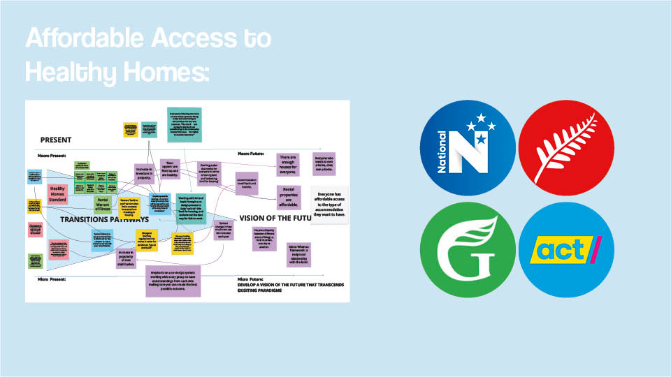
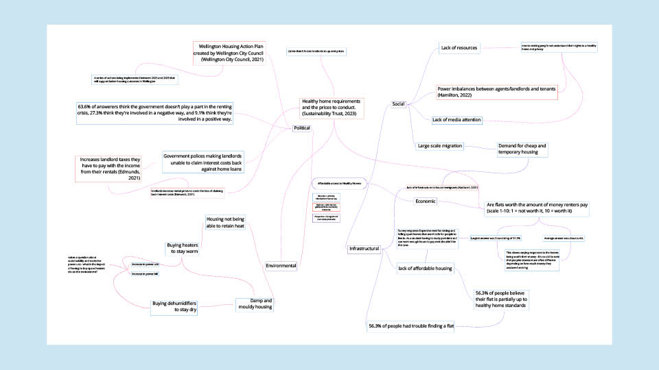
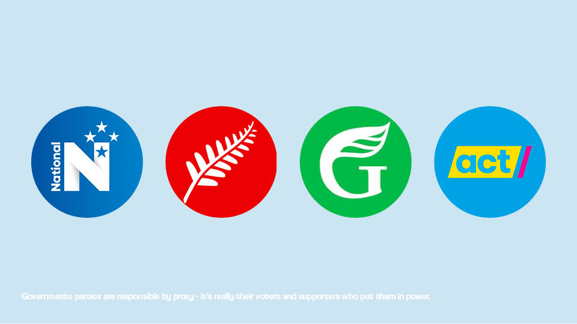
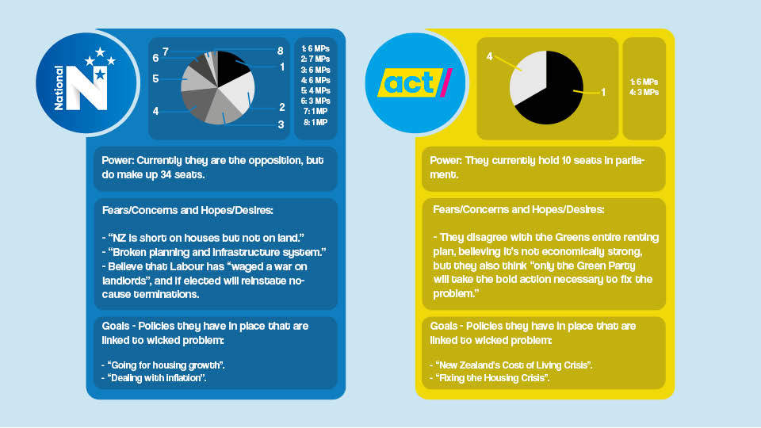
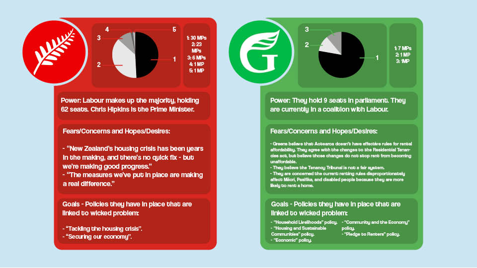
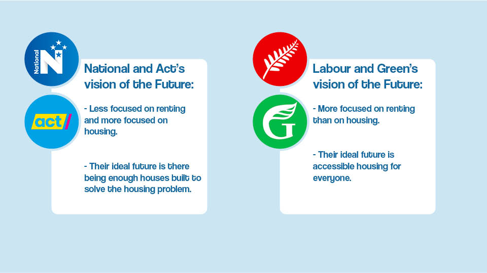
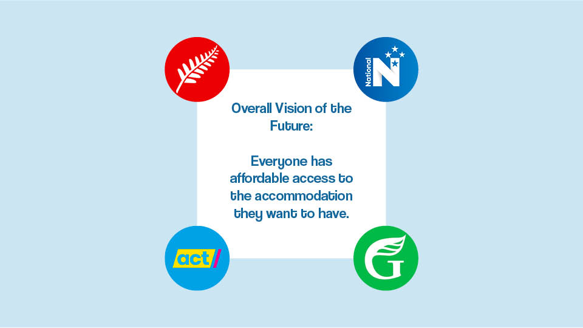
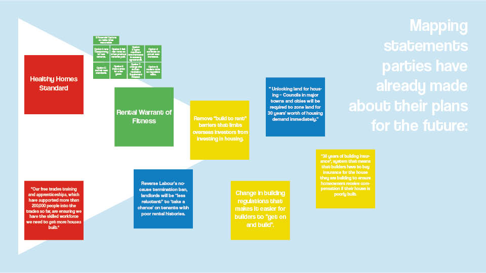
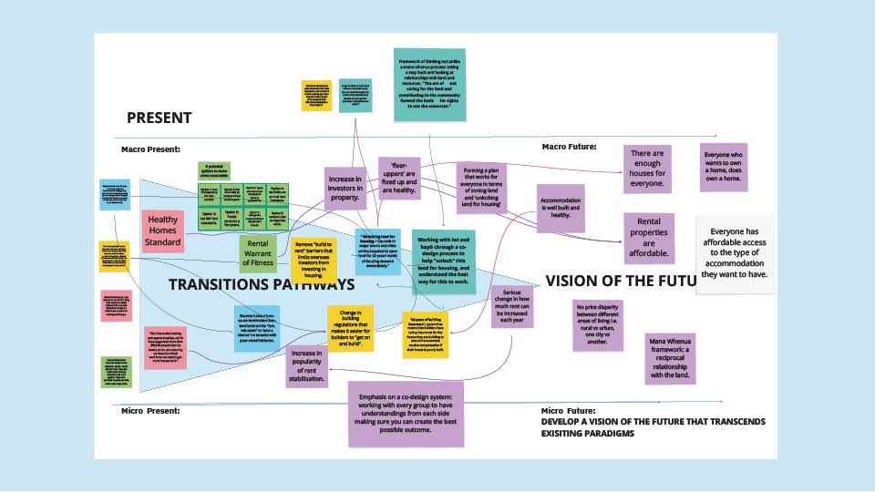

Designing Interventions:
Everyone Has Affordable Access To The Type Of Accommodation They Want To Have.
A Presentation for Design in Transition, created as a continuation of "Affordable Access to Healthy Homes".
  I I initially looked at a wide variety of stakeholders:
Renters/tenants, Landlords (private, property management), Property developers, Local Government, National Government, and Tenancy tribunals.
I settled on the National Government primarily because of the upcoming election. They're all releasing new policies that are more relevant than the ones that were released 3 years ago, and the renting/housing crisis is more prevalent now than in 2020. They also have the most power out of stakeholders to make positive change.
I also think it was important to note down the bottom that government parties are responsible by proxy and that their voters/supporters put them in power. It brings to question whether or not individual politicians genuinely support the policies their parties release or if it’s just to ensure voter support, and how oppositional politicians interact behind the scene.
The graphs at the top of these stakeholder profiles demonstrate how many properties each sitting MP owns in each party. I found the data in the registry of pecuniary and other specified interests of members of parliament 2023. I felt it was important to look into because it reflects the mindsets some MPs might have towards the issue of housing. For example, a National MP might own 4 rental properties which may make them less inclined to be pro-tenant or anti-landlord like some other MPs. Neither National or Act have any policies that directly relate to the renting crisis, they see it more as an issue that will be solved by building more houses.
The Labour party has only really discussed what they have done for New Zealand, not what they plan to do in the future.The Green party has the most focus on renting and housing out of all stakeholders. It’s clear through the number of policies they have they link back to the wicked problem.
National and Act’s vision of the future sees there being enough houses to solve the housing problem. Labour and Green care less about the number of houses, and more about everyone having access to housing.
Because of the differences in future visions between the 4 stakeholders, I think the overall vision of the future is something that supports everyone having affordable access to the accommodation they want to have. I think it’s important to say accommodation, because people have mixed definitions of what they think home is. Not everyone wants to own a house, and not everyone wants to rent. A vision of the future that appeals to all stakeholders looks like everyone being able to live however they want to.
I began my map by putting down everything that the parties have already implemented (like the healthy homes standards) or are planning on implementing if elected. I mapped these first so I could begin linking them to visions of the future.
This is my transition pathway. The notes in the colour of each party are the pre-established paradigms, while the purple notes are future paradigms that will result in the 2050 end goal.

To go more in depth to my interventions, I looked at something similar to a mana whenua process and implementing Mātauranga Māori. Mana whenua is something that could be implemented because it’s all about relationships with the land you use and live on. Working with iwi or hapū through a co-design process to ensure they are involved every step of the way is how this could be implemented.
Touching on co-design itself, I think it is a necessary intervention that I will explore in phase 3. Collaboration is especially important to facilitate cooperation between the stakeholders. It’s necessary to reach the vision of the future that appeals to all of them, because they would need to work together to understand the end goal.

These are the paradigms that would be introduced to reach the vision of the future.

This demonstrates how the hypothetical paradigms link to the pre-existing ones. A rental WOF and the Healthy Homes standard would create rental properties that are affordable, and the Act Building Insurance idea works with the HHS to ensure accommodation is well built and healthy. It shows how the parties’ individual ideas can work together overall, even though it may not seem like it now.